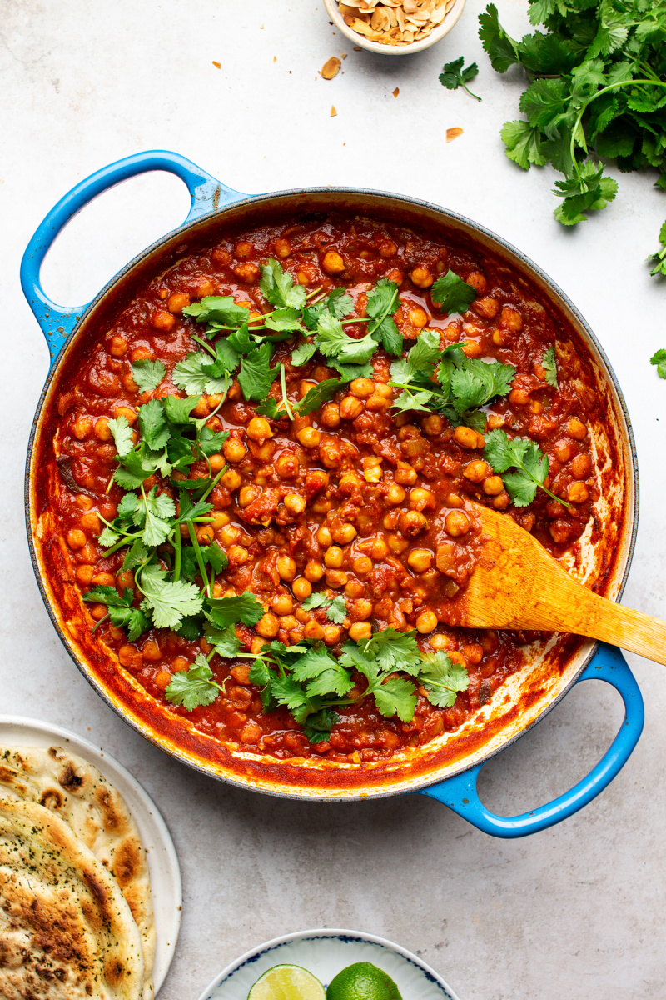

Chana Masala

Description
Chana masala, also known as chole masala, is a popular dish in Indian and Pakistani cuisine.
It features chickpeas (chana) as the main ingredient, which are simmered in a rich sauce made from onions, tomatoes, garlic, and a blend of spices such as cumin, coriander, and garam masala.
This dish is often enjoyed with various types of bread, such as roti, naan, or bhatura, and can also be served with rice.
Ingredients
- 1 cup cooked chickpeas (or ½ cup canned, drained)
- 1 small onion, finely chopped
- 1 garlic clove, minced (optional)
- 1 tsp cumin seeds
- 1 tsp turmeric powder
- 1 tsp coriander powder
- ½ tsp garam masala
- 1 tsp salt
- 1 medium tomato, chopped (or 2 tsp tomato paste)
- 1 tbsp oil
- ½ cup water
Steps
- Heat oil and add cumin seeds; let them sizzle.
- Add onions (and garlic if using) and sauté until soft.
- Stir in turmeric, coriander powder, and salt.
- Add tomato and cook 2 to 3 minutes until softened.
- Mix in chickpeas and water; simmer for 8 to 10 minutes.
- Sprinkle garam masala before serving; pair with rice or flatbread.